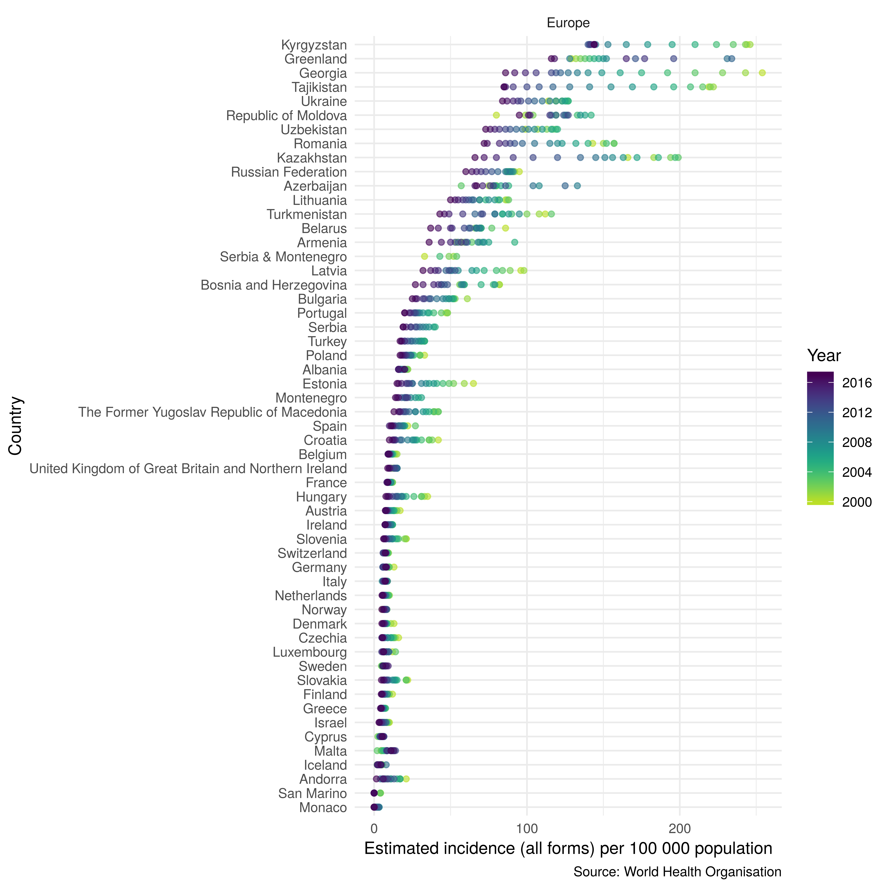
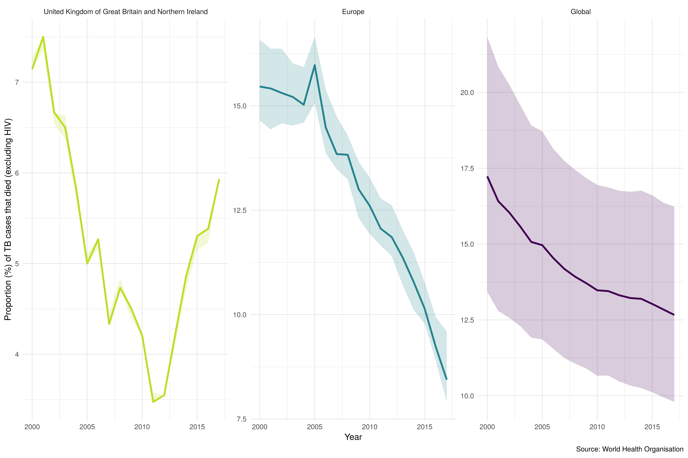
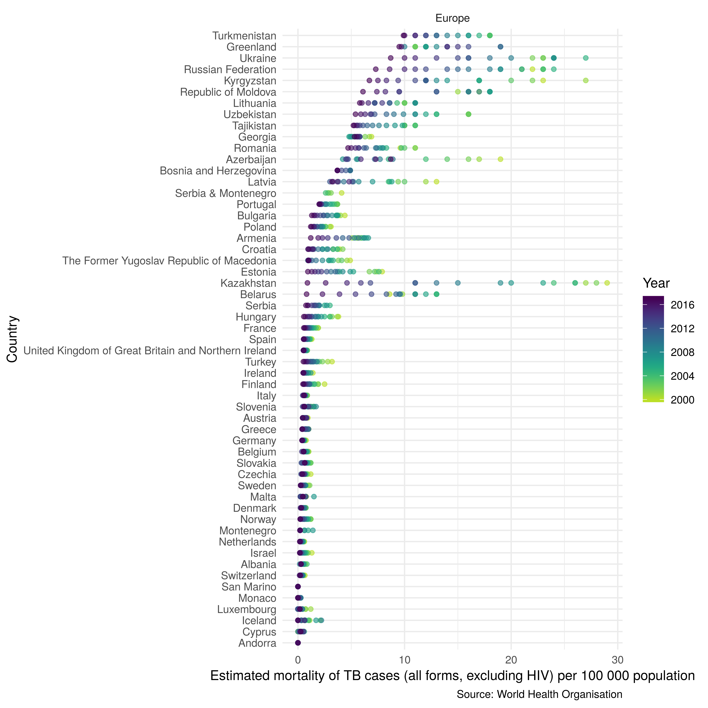

getTBinR 0.5.7 is now on CRAN and should be available on a mirror near you shortly! This update mainly focussed on building out new country level Tuberculosis (TB) report functionality but along the way this led to a new summary plotting function that quickly and easily shows TB trends across regions and globally. I also had some fun developing a hexsticker (Tweet at me with something you made using the package to get a physical version - whilst my postage money lasts…), reducing the dependencies with itdepends and pkgnet and dealing with some breaking changes from an uncoming dplyr update (my own fault for missing a function import).
The full changelog is below along with an example of the country level TB report generated for the UK (generate a report on the country of your choice using getTBinR::render_country_report(country = "United Kingdom", save_dir = ".")).
Feature updates
- Added support for
annual_changetosummarise_tb_burdenand added validating tests. - Added support for rates and proportions to
summarise_tb_burdenand added validating tests. - Added a new function -
plot_tb_burden_summary. Function wrapssummarise_tb_burdenand allows all in one summary plotting. Inspired by this case study. - Added a rmarkdown parameterised country level report on TB (
render_country_report). - Added a report generating button to the dashboard generated by
run_tb_dashboard. - Tweaked
map_tb_burdento not usegeom_pathfor country outlines. - Added a smooth argument to
plot_tb_burdento allow smooth trend lines to be plotted (derived usingggplot2::geom_smooth). - Tweaked line thickness in
plot_tb_burdento improve plot appearance. - Added legend argument to all plotting functions to allow control of the legend appearance.
Package updates
- Added script to generate hexsticker
- Added hexsticker to README
- Added DOI link to Zenodo.
- Updated tests to account for
dplyr8.0 release andvdiffrupdates. - Added itdepends to package report functionality.
Example: United Kingdom Tuberculosis Report
## Load the package
library(getTBinR)
## Load additional packages
library(dplyr) # For data munging
library(tidyr)
library(rlang)
library(ggplot2)
## Get the data
tb <- get_tb_burden(verbose = FALSE)
## Get the data dictionary
dict <- get_data_dict(verbose = FALSE)
##Assign parameters - these are set in the YAML within the package
country <- "United Kingdom"
interactive <- FALSETB incidence rates
metric_summary <- function(df = NULL, target_country = NULL, metric = NULL) {
target_country <- df$country[grepl(target_country, df$country)] %>%
unique %>%
first
## Set up metric with confidence intervals
metric <- enquo(metric)
metric_lo <- sym(paste0(quo_name(metric), "_lo"))
metric_hi <- sym(paste0(quo_name(metric), "_hi"))
## Filter for the country of interest
country_df <- df %>%
filter(country %in% target_country)
## Most up to date year of incidence data
recent_inc <- country_df %>%
drop_na(!!metric) %>%
filter(year == max(year)) %>%
select(!!metric, !!metric_lo, !!metric_hi, year, g_whoregion) %>%
mutate(inc_rate = paste0(!!metric, " (", !!metric_lo, " - ", !!metric_hi, ")"))
## Country rank
ranked_countries_inc <- df %>%
filter(year == recent_inc$year) %>%
arrange(desc(!!metric)) %>%
mutate(rank = 1:n())
## World rank
target_rank_world <- ranked_countries_inc %>%
filter(country == target_country) %>%
pull(rank)
## Region rank
target_rank_region <- ranked_countries_inc %>%
filter(g_whoregion %in% recent_inc$g_whoregion) %>%
mutate(rank = 1:n()) %>%
filter(country == target_country) %>%
pull(rank)
## Summarise annual change
country_change <- summarise_tb_burden(metric = quo_name(metric),
stat = "mean",
countries = target_country,
compare_to_region = FALSE,
compare_to_world = FALSE,
compare_all_regions = FALSE,
annual_change = TRUE,
verbose = FALSE) %>%
filter(year > (max(year) - 10)) %>%
summarise(change = mean(!!metric, na.rm = FALSE)) %>%
mutate(change = round(change * 100, 1) %>%
paste0(., "%")) %>%
pull(change)
out <- list(recent_inc$year[1], recent_inc$inc_rate[1],
target_rank_world, target_rank_region,
country_change)
names(out) <- c("year", "metric", "world_rank", "region_rank", "avg_change")
out <- ifelse(is.na(out), "(Missing)", out)
return(out)
}
inc_sum <- metric_summary(tb, country, e_inc_100k)In 2017 United Kingdom had an estimated Tuberculosis incidence rate of 8.9 (8.1 - 9.8) per 100,000 people making it number 165 in the world and number 32 regionally. In the last 10 years this has changed by -4.9% on average each year.
Regional and Global Trends Comparision
plot_tb_burden_summary(countries = country,
metric_label = "e_inc_100k",
compare_to_world = TRUE,
compare_to_region = TRUE,
compare_all_regions = FALSE,
annual_change = FALSE,
facet = "Area",
scales = "free_y",
legend = "none",
interactive = interactive,
verbose = FALSE)
Rates Regional Breakdown
plot_tb_burden_overview(countries = country,
compare_to_region = TRUE,
interactive = interactive,
verbose = FALSE)
Case Detection Rates (CDR)
United Kingdom had an estimated case detection rate of 89 (81 - 98)% in 2017 making it number 4 in the world (with number 1 having the highest CDR) and number 3 regionally. In the last 10 years this has changed by 0% on average each year.
Regional Breakdown
plot_tb_burden_overview(metric = "c_cdr",
countries = country,
compare_to_region = TRUE,
interactrive = interactive,
verbose = FALSE)
TB mortality rates - excluding HIV
In 2017 United Kingdom had an estimated Tuberculosis mortality rate (excluding HIV) of 0.53 (0.52 - 0.53) per 100,000 people making it number 166 in the world and number 32 regionally. In the last 10 years this has changed by -1.6% on average each year.
Proportion of TB Cases that Died (excluding HIV) - Regional and Global Comparision
plot_tb_burden_summary(metric = "e_mort_exc_tbhiv_num",
denom = "e_inc_num",
rate_scale = 100,
countries = country,
compare_to_region = TRUE,
compare_all_regions = FALSE,
interactive = interactive,
verbose = FALSE,
facet = "Area",
scales = "free_y",
legend = "none") +
labs(y = "Proportion (%) of TB cases that died (excluding HIV)")
Rates Regional Breakdown
plot_tb_burden_overview(metric = "e_mort_exc_tbhiv_100k",
countries = country,
compare_to_region = TRUE,
interactrive = interactive,
verbose = FALSE)
TB HIV related mortality rates
In 2017 United Kingdom had an estimated Tuberculosis mortality rate (related to HIV) of 0.1 (0.05 - 0.16) per 100,000 people making it number 127 in the world and number 23 regionally. In the last 10 years this has changed by 7.6% on average each year.
Rates Regional Breakdown
plot_tb_burden_overview(metric = "e_mort_tbhiv_100k",
countries = country,
compare_to_region = TRUE,
interactrive = interactive,
verbose = FALSE)
For other examples of using getTBinR to visualise the WHO TB data see my gists, previous blog posts, and the getTBinR website.